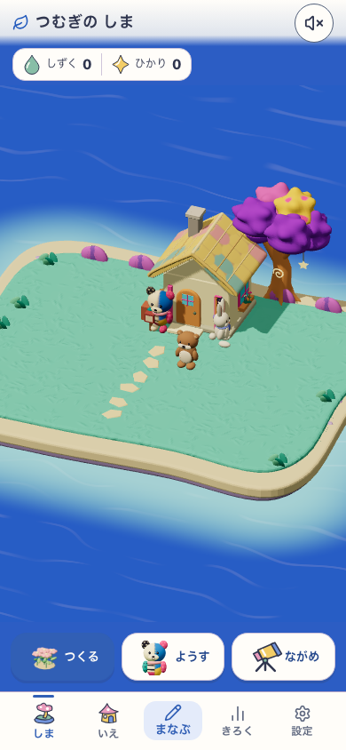
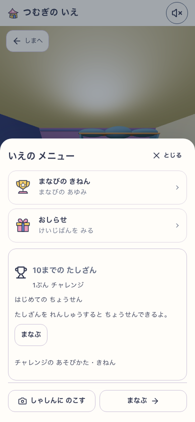
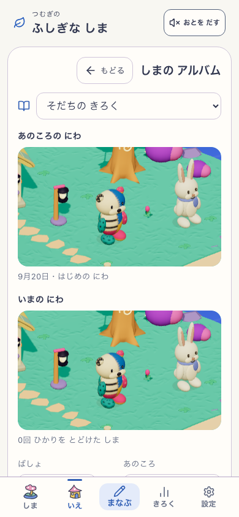
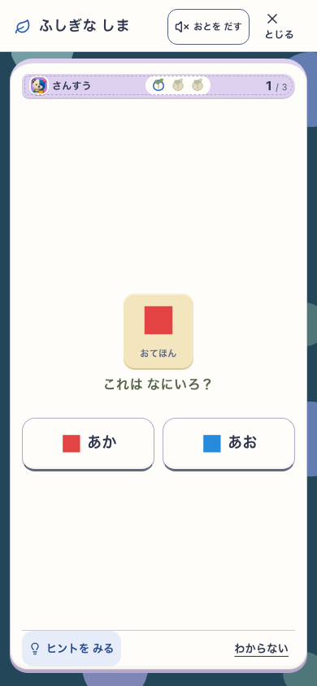
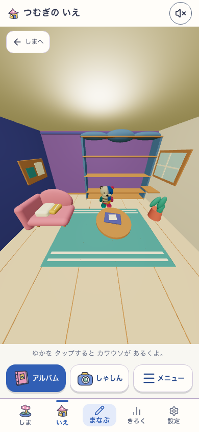
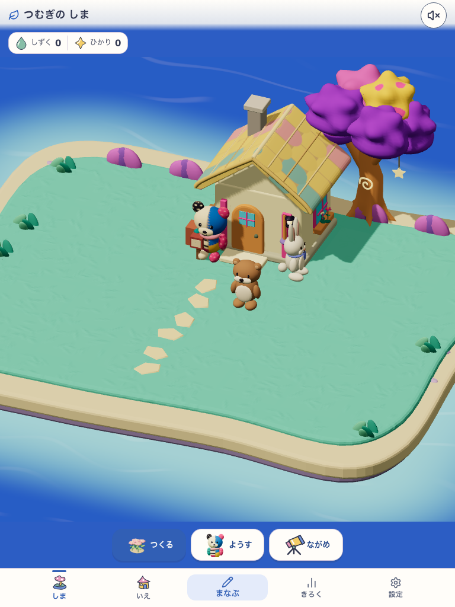
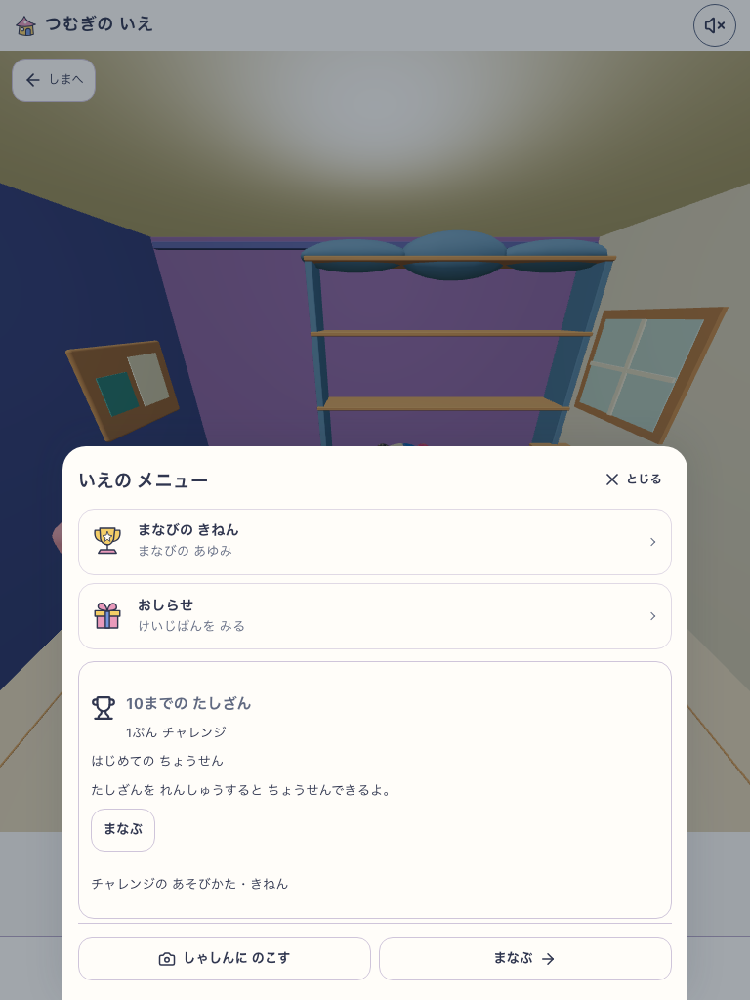
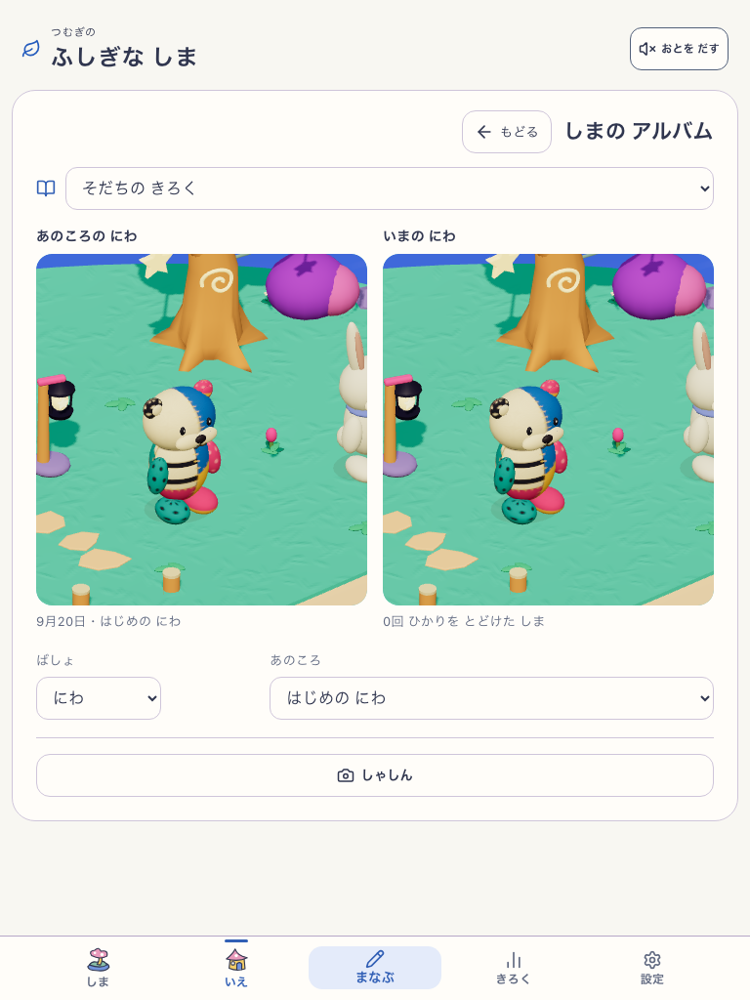
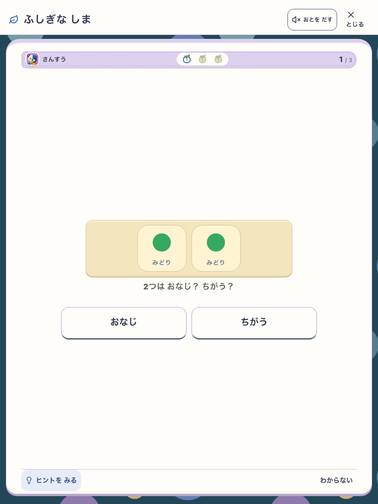

大きな常設カードを閉じ、室内・アルバム・しゃしんを前面に。生成り、藍、青、色付きの物の絵を共有。室内の3D・学習・保存は保持。
対象はローカルの本番用ビルド。候補 house-world-first-v1。ビルド情報 / 実操作の記録











上の変更後画面はすべて同一ビルド house-world-first-v1-local:89223e48-4256-4366-ae91-198aa748c4d6。音off。タブレットはreduced motion。子どもの無説明理解・実機PWA更新・本番公開は未実施。